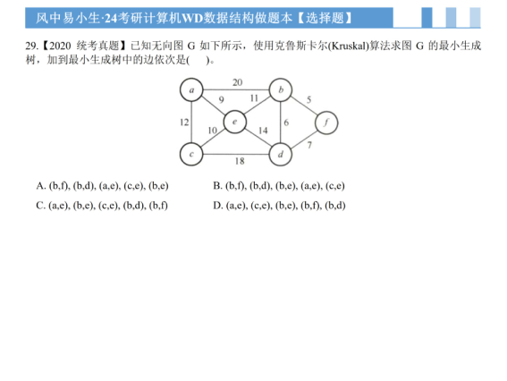
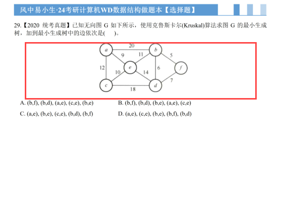
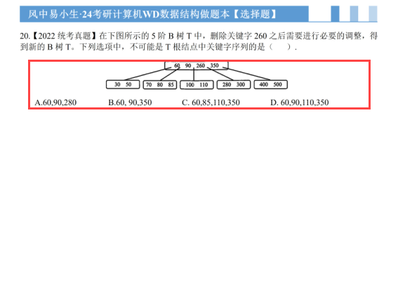
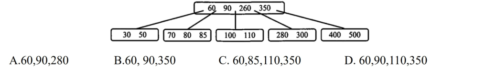

Full Page

Targets: 407 (q326, Q1) and 480 (q399, Q3) | Crop: visual-v2.1 | No DB/Storage changes
| ID | Q | Pub | Previews | Before (parsed_content) | After (proposed) | File Plan |
|---|---|---|---|---|---|---|
| 407 | q326 | ✓ | Full Page  Overlay  | {
"text": "【2020统考真题】已知无向图G如下所示，使用克鲁斯卡尔(Kruskal)算法求图G的最小生成树，加到最小生成树中的边依次是（ ）。",
"render_mode": "segments",
"segments": [
{
"type": "text",
"text": "【2020统考真题】已知无向图G如下所示，使用克鲁斯卡尔(Kruskal)算法求图G的最小生成树，加到最小生成树中的边依次是（ ）。"
},
{
"type": "image",
"url": "http://localhost:8000/static/question-assets/202607/ds_sc/q_407_p326_73e8570b2a44.png",
"alt": "题目原图"
}
]
} | {
"text": "【2020统考真题】已知无向图G如下所示，使用克鲁斯卡尔(Kruskal)算法求图G的最小生成树，加到最小生成树中的边依次是（ ）。",
"render_mode": "segments",
"segments": [
{
"type": "text",
"text": "【2020统考真题】已知无向图G如下所示，使用克鲁斯卡尔(Kruskal)算法求图G的最小生成树，加到最小生成树中的边依次是（ ）。"
},
{
"type": "image",
"semantic_role": "content_image",
"crop_version": "visual-v2.1",
"url": "/static/question-assets/202607/ds_sc/q_407_p326_visual-v2.1.png",
"region_type": "diagram",
"region_id": "auto_q407",
|
|
| 480 | q399 | ✓ | Full Page  Overlay  Proposed  | {
"text": "【2022统考真题】在下图所示的5阶B树T中，删除关键字260之后需要进行必要的调整，得 到新的B树T。下列选项中，不可能是T根结点中关键字序列的是（ ）． 6090.260350 280300 400500 3050 708085 100110",
"render_mode": "segments",
"segments": [
{
"type": "text",
"text": "【2022统考真题】在下图所示的5阶B树T中，删除关键字260之后需要进行必要的调整，得 到新的B树T。下列选项中，不可能是T根结点中关键字序列的是（ ）． 6090.260350 280300 400500 3050 708085 100110"
},
{
"type": "image",
"url": "http://localhost:8000/static/question-assets/202607/ds_sc/q_480_p399_90bf6b232546.png",
"alt | {
"text": "【2022统考真题】在下图所示的5阶B树T中，删除关键字260之后需要进行必要的调整，得 到新的B树T。下列选项中，不可能是T根结点中关键字序列的是（ ）． 6090.260350 280300 400500 3050 708085 100110",
"render_mode": "segments",
"segments": [
{
"type": "text",
"text": "【2022统考真题】在下图所示的5阶B树T中，删除关键字260之后需要进行必要的调整，得 到新的B树T。下列选项中，不可能是T根结点中关键字序列的是（ ）． 6090.260350 280300 400500 3050 708085 100110"
},
{
"type": "image",
"semantic_role": "content_image",
"crop_version": "visual-v2.1",
"url": "/static/question-asse |
|
| ID | Field | Before | After |
|---|---|---|---|
| 407 | parsed_content.segments[1].url | "http://localhost:8000/static/question-assets/202607/ds_sc/q_407_p326_73e8570b2a44.png" | "/static/question-assets/202607/ds_sc/q_407_p326_visual-v2.1.png" |
| 407 | parsed_content.source_snapshot_url | null | "/static/question-assets/202607/ds_sc/snapshot_q407_p326_visual-v2.1.png" |
| 407 | image_url | "[\"http://localhost:8000/static/question-assets/202607/ds_sc/q_407_p326_73e8570b2a44.png\"]" | [ "/static/question-assets/202607/ds_sc/q_407_p326_visual-v2.1.png" ] |
| 480 | parsed_content.segments[1].url | "http://localhost:8000/static/question-assets/202607/ds_sc/q_480_p399_90bf6b232546.png" | "/static/question-assets/202607/ds_sc/q_480_p399_visual-v2.1.png" |
| 480 | parsed_content.source_snapshot_url | null | "/static/question-assets/202607/ds_sc/snapshot_q480_p399_visual-v2.1.png" |
| 480 | image_url | "[\"http://localhost:8000/static/question-assets/202607/ds_sc/q_480_p399_90bf6b232546.png\"]" | [ "/static/question-assets/202607/ds_sc/q_480_p399_visual-v2.1.png" ] |
| Import ID | import_id | requires_content_image_approval | content_bbox_approval | content_image_approval | source_snapshot_approval | segment_placement_approval | published_sync_approval | final_approval |
|---|---|---|---|---|---|---|---|---|
| 407 | 407 | pending | pending | pending | pending | pending | pending | pending |
| 480 | 480 | pending | pending | pending | pending | pending | pending | pending |
{
"strategy": "restore_from_before + archive_cleanup",
"steps": [
"Restore question_imports.parsed_content",
"Restore question_imports.parsed_options",
"Restore questions.content (if published)",
"Restore questions.image_url (if published)",
"Delete new storage files (zero refcount)",
"Do NOT delete archived old files"
]
}